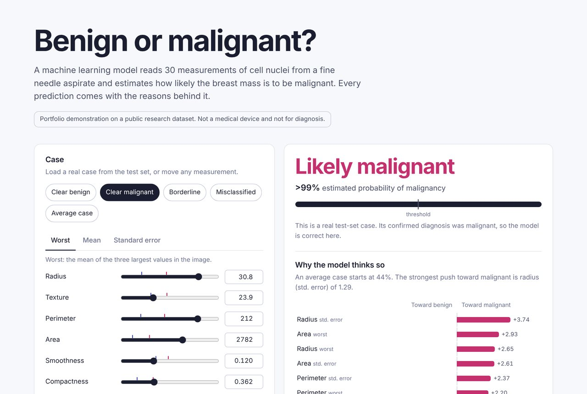

Breast Cancer Classification with Explainable AI
A classifier that predicts whether a breast mass is benign or malignant from 30 cell-nucleus measurements in the Wisconsin Diagnostic Breast Cancer dataset, with a dashboard that explains every prediction.
- Accuracy on held-out data
- 96.5%
- ROC AUC
- 0.996
- Models compared
- 4
- Compared logistic regression, SVM, random forest and gradient boosting with 5-fold cross-validation; the most interpretable model was also the most accurate.
- Shows exactly which measurements push each prediction toward benign or malignant.
- An adjustable threshold makes the trade-off between catching cancers and false alarms visible.
Python, scikit-learn, pandas, JavaScript, pytest, GitHub Actions